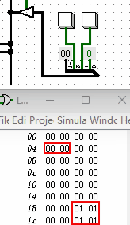

一个躲车小游戏
本节我们来制作一个稍微复杂一点的功能：躲避障碍物的赛车的小游戏。但是我们之前设计的显示输出只有一个“十六进制数码管”，根本不能像显示器那样显示出各种各样的画面，我们该怎么办呢。我来简要的介绍一种方法，那就是我们可以把“内存”的每一个存储单元寄存器的输出端连接一个“发光二极管”，然后把所有的发光二极管按顺序排成阵列。因此我们操作内存选择往哪个存储单元存1，其连接的发光二极管就会发光，存0，发光二极管就会熄灭，这样我们就像操作内存一样来操作点阵LED显示器。最后，我们再把这个点阵LED显示器连接到前一章节的计算机电路图中，增加一条修改点阵LED显示器的指令即可。然而在Logisim软件里并没内置有我说的这种元件，不过我想到了一个非常偷懒的办法，不用修改前一章节中的任何电路结构。你仔细看那个“内存”那个元件，上面是不是显示了前几十个存储单元的数据？我们可以直接把上面显示的数据想像成是否发光的二极管，如果二极管发光，数据显示1，如果二极管熄灭，数据显示0。这样，我们就可以把内存前面的数据当作点阵LED显示器，后面看不见的数据继续当作内存的存储单元使用，也可以换一种说法：我们把显示器的缓冲区的地址和内存的地址统一编码到一起。另外，汇编指令之前我们只设计了6个，这次我再增加一个汇编指令“ADD [[2]], [1], [0]”。它和之前的加法指令类似，只是保存位置不同，我举个例子对比下：
- 指令ADD [2], [1], [0]的功能是把内存地址1处的值和地址0处的值相加保存到地址2处
- 指令ADD [[2]], [1], [0]的功能也是把内存地址1处的值和地址0处的值相加，但是结果是先取出地址2处的值，然后再把这个值当作新的内存地址，把加法结果保存到新的内存地址中去。比如，如果地址2存放的是3，那么加法结果就被保存地址3中。如果你有接触过高级编程语言的话，它有点类似里面的指针概念。
下面我来看下这个小游戏是如何使用汇编代码来实现的，其代码如下所示。
MOV [40], 0 //注释：固定值0
MOV [41], 1 //注释：固定值1
MOV [42], 4 //注释：固定值屏幕宽
MOV [43], 8 //注释：固定值屏幕高
MOV [44], 32 //注释：固定值像素总数
MOV [45], 2 //注释：按钮1的数值
MOV [46], 4 //注释：按钮2的数值
MOV [51], 0 //注释：小车位置，0为左，1为右
MOV [52], 0 //注释：障碍起始像素
LOOP_ALL:
IN [60] //注释：读取按钮输入，保存至内存60处
JUMPIF KEY2, [60], [46] //注释：如果按下按钮2，跳转到KEY2处
JUMPIF KEY1, [60], [45] //注释：如果按下按钮1，跳转到KEY1处
JUMP UPDATE //注释：跳转到UPDATE处
KEY1:
MOV [51], 1 //注释：小车位置设置成0
JUMP UPDATE //注释：跳转到UPDATE处
KEY2:
MOV [51], 0 //注释：小车位置设置成1
JUMP UPDATE //注释：跳转到UPDATE处
UPDATE:
ADD [52], [52], [42] //注释：障碍下移一行
JUMPIF RESET_ROCK, [52], [44] //注释：障碍如移到底，从头再来
JUMP DRAW_CLEAR //注释：跳转到绘制屏幕开始处
RESET_ROCK:
MOV [52], 0 //注释：障碍从头再来
DRAW_CLEAR:
MOV [61], 0 //注释：这几行负责清空屏幕
DRAW_CLEAR_LOOP:
ADD [[61]], [40], [40]
ADD [61], [61], [41]
JUMPIF DRAW_ROCK, [61], [44]
JUMP DRAW_CLEAR_LOOP
DRAW_ROCK:
ADD [62], [52], [40] //注释：这几行绘制障碍
ADD [[62]], [41], [40]
ADD [62], [62], [41]
ADD [[62]], [41], [40]
DRAW_CAR_L:
JUMPIF DRAW_CAR_R, [51], [41]
MOV [24], 1 //注释：这几行把小车绘制在左边
MOV [25], 1
MOV [28], 1
MOV [29], 1
JUMP LOOP_ALL //注释：跳转到最开始处，循环
DRAW_CAR_R:
MOV [26], 1 //注释：这几行把小车绘制在右边
MOV [27], 1
MOV [30], 1
MOV [31], 1
JUMP LOOP_ALL //注释：跳转到最开始处，循环
具体的使用方式的演示动画如下图所示。
当游戏运行后，我们调出RAM的交互界面来当作点阵显示器，仔细看演示动画，我把它放到了右小角的位置。其中当数字变为1的时候代表对应像素点亮，当数字为0的时候，代表像素熄灭。为了让你看的更清楚下，我把右下角的演示动画单独录制了一份，同时用红色的矩形框圈出小车和障碍的位置，如下图所示那样，有助于你更清楚的观察游戏运行效果。

这里我们看到了一个奇怪的效果，那些已经变成1的像素总会被“清屏过程”再次改成0。这是由于我们的计算机不够快，如果我们的“时钟信号发生器”频率能调的更高，比如每秒切换高低信号1亿次，在绘制每一帧的后面加入一个1秒的延时，你就不会看到这种0、1闪烁的效果了，同时障碍也会变成大约每1秒下落一行。
不管怎么说，效果看上去还不错！只是这段汇编代码写的有点复杂了，这还是只实现了小车左右移动和障碍的移动功能，距离完整的游戏差的很远。但制作一个完整的游戏并不是我们的教学目的，我只是演示了一下如何使用汇编语言来完成一个带有输入输出更复杂的功能。虽然我们本书中无论是计算机、汇编语言还是制作的小游戏看起来都非常简陋，但它的核心思想和在现代计算机中使用高级编程语言制作游戏的思想有着异曲同工之处。